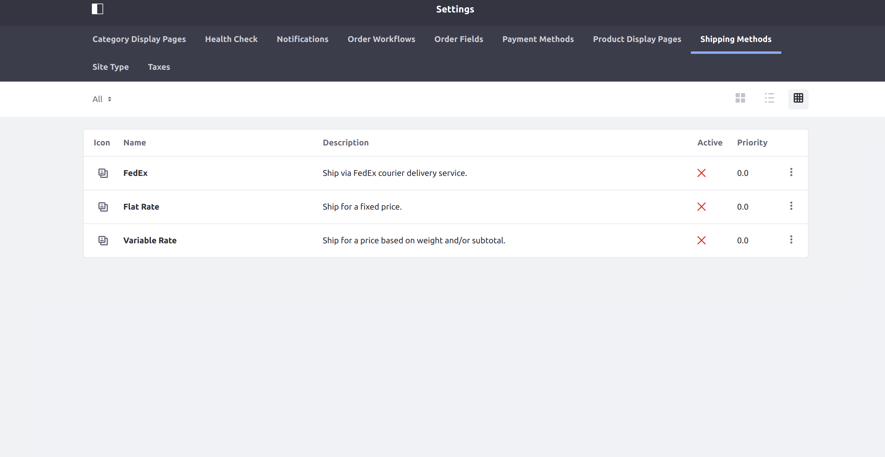
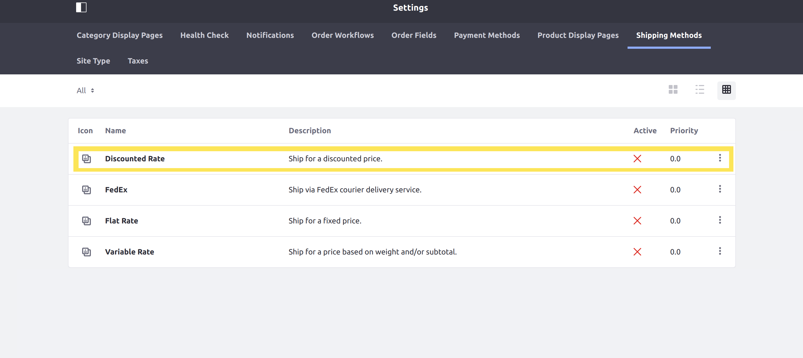

Implementing a New Shipping Engine¶
This tutorial will show you how to add a custom shipping engine by implementing the CommerceShippingEngine interface.
Shipping engines process shipping options to determine which of the available options will be shown to the user, for what price, and so on. Liferay Commerce provides three shipping engines out-of-the-box: a flat rate engine, a variable rate engine, and the FedEx engine.
The FedEx shipping engine is only available for Commerce Enterprise Subscribers.

Deploy an Example¶
In this section, we will get an example shipping engine up and running on your instance of Liferay Commerce. Follow these steps:
Start Liferay Commerce.
docker run -it -p 8080:8080 liferay/commerce:2.0.4Download and unzip Acme Commerce Shipping Engine
curl liferay-j6x8.zip
unzip liferay-j6x8.zip
Go to
liferay-j6x8.cd liferay-j6x8Build and deploy the example.
./gradlew deploy -Ddeploy.docker.container.id=$(docker ps -lq)
Note: This command is the same as copying the deployed jars to /opt/liferay/osgi/modules on the Docker container.
Confirm the deployment in the Docker container console.
STARTED com.acme.j6x8.impl_1.0.0
Verify that the example shipping engine was added. Open your browser to
https://localhost:8080and navigate to Site Administration → Commerce → Settings → Shipping Methods. The new shipping method (「Discounted Rate」) representing our shipping engine will be present on this screen.

Congratulations, you』ve successfully built and deployed a new shipping engine that implements CommerceShippingEngine.
Next, let』s dive deeper to learn more.
Walk Through the Example¶
In this section, we will review the example we deployed. First, we will annotate the class for OSGi registration. Second, we will review the CommerceShippingEngine interface. And third, we will complete our implementation of CommerceShippingEngine.
Annotate the Class for OSGi Registration¶
@Component(
immediate = true,
property = "commerce.shipping.engine.key=" + J6X8CommerceShippingEngine.KEY,
service = CommerceShippingEngine.class
)
public class J6X8CommerceShippingEngine implements CommerceShippingEngine {
public static final String KEY = "Example";
It is important to provide a distinct key for the shipping engine so that Liferay Commerce can distinguish the new engine from others in the shipping engine registry. Reusing a key that is already in use will override the existing associated engine.
Review the CommerceShippingEngine Interface¶
Implement the following methods:
public String getCommerceShippingOptionLabel(String name, Locale locale);
This method returns a text label used for shipping options. See the implementation in J6X8CommerceShippingEngine.java for a reference in retrieving the description with a language key.
See Localizing Your Application for more information.
public List<CommerceShippingOption> getCommerceShippingOptions(
CommerceContext commerceContext, CommerceOrder commerceOrder,
Locale locale)
throws CommerceShippingEngineException;
This will be where we add the business logic for our custom shipping engine. It must fetch a list of available options, then perform the processing necessary to present them to the customer.
public String getDescription(Locale locale);
This returns a brief description of our shipping engine. It works similarly to thegetCommerceShippingOptionLabelmethod.
public String getName(Locale locale);
This returns the name of our shipping engine to display in the UI. It also works similarly to thegetCommerceShippingOptionLabelandgetDescriptionmethods.
Complete the Shipping Engine¶
The shipping engine is comprised of backend logic preparing the list of shipping options to be shown to the customer. This logic is best implemented by splitting it into multiple steps. Do the following:
- Implement getting the available shipping options.
- Implement address restriction checking.
- Implement a loop to process the options.
- Call processing logic from
getCommerceShippingOptions. - Add the language keys to
Language.properties.
Liferay Commerce』s fixed rate shipping engine is a good reference to see what processing steps are a good baseline to start with. Our example will follow the same steps.
Implement Getting the Available Shipping Options¶
private List<CommerceShippingFixedOption> _getCommerceShippingFixedOptions(
long groupId) {
CommerceShippingMethod commerceShippingMethod =
_commerceShippingMethodLocalService.fetchCommerceShippingMethod(
groupId, KEY);
if (commerceShippingMethod == null) {
return Collections.emptyList();
}
return _commerceShippingFixedOptionLocalService.
getCommerceShippingFixedOptions(
commerceShippingMethod.getCommerceShippingMethodId(),
QueryUtil.ALL_POS, QueryUtil.ALL_POS);
}
First, use CommerceShippingMethodLocalService to get the 「shipping method」 (representing our shipping engine), and then use CommerceShippingFixedOptionLocalService to get the available options.
Implement Address Restriction Checking¶
private boolean _shippingOptionIsAddressRestricted(
CommerceOrder commerceOrder,
CommerceShippingFixedOption commerceShippingFixedOption)
throws PortalException {
CommerceAddress commerceAddress = commerceOrder.getShippingAddress();
return _commerceAddressRestrictionLocalService.
isCommerceShippingMethodRestricted(
commerceShippingFixedOption.getCommerceShippingMethodId(),
commerceAddress.getCommerceCountryId());
}
The next step determines whether a particular shipping option is restricted for the order』s shipping address. A restricted option will not presented as an option to choose from.
Use CommerceAddressRestrictionLocalService to determine if the option is restricted for the order』s address. Use
CommerceOrderto get the address information; theCommerceOrderobject represents all kinds of information about the order being shipped. See CommerceOrder.java and CommerceOrderModel.java to find more methods you can use with aCommerceOrder.
Implement a Loop to Process the Options¶
private List<CommerceShippingOption> _getCommerceShippingOptions(
long groupId, CommerceOrder commerceOrder, Locale locale)
throws PortalException {
List<CommerceShippingOption> commerceShippingOptions =
new ArrayList<>();
List<CommerceShippingFixedOption> commerceShippingFixedOptions =
_getCommerceShippingFixedOptions(groupId);
for (CommerceShippingFixedOption commerceShippingFixedOption :
commerceShippingFixedOptions) {
if (_shippingOptionIsAddressRestricted(
commerceOrder, commerceShippingFixedOption)) {
continue;
}
String name = commerceShippingFixedOption.getName(locale);
if (_commerceShippingHelper.isFreeShipping(commerceOrder)) {
commerceShippingOptions.add(
new CommerceShippingOption(name, name, BigDecimal.ZERO));
}
BigDecimal amount = commerceShippingFixedOption.getAmount();
amount = amount.multiply(new BigDecimal(DISCOUNT_RATE));
commerceShippingOptions.add(
new CommerceShippingOption(name, name, amount));
}
return commerceShippingOptions;
}
The next step is to do most of the work in processing (using our previously defined helper methods), so we can more easily call it from the
getCommerceShippingOptionsmethod. In our example, we add an extra step at the end of the processing loop to multiply the amount for normally charged shipping options by a discounted rate.Use the CommerceShippingHelper to more easily determine if the order should be free.
Call Processing Logic from getCommerceShippingOptions¶
@Override
public List<CommerceShippingOption> getCommerceShippingOptions(
CommerceContext commerceContext, CommerceOrder commerceOrder,
Locale locale)
throws CommerceShippingEngineException {
List<CommerceShippingOption> commerceShippingOptions =
new ArrayList<>();
try {
commerceShippingOptions = _getCommerceShippingOptions(
commerceContext.getSiteGroupId(), commerceOrder, locale);
}
catch (PortalException pe) {
if (_log.isDebugEnabled()) {
_log.debug(pe, pe);
}
}
return commerceShippingOptions;
}
Call the processing logic defined previously fromgetCommerceShippingOptions, and handle any possible errors.
Add the Language Keys to Language.properties¶
Add the language keys and their values to a Language.properties file within our module:
discounted-rate=Discounted Rate
ship-for-a-discounted-price=Ship for a discounted price.
See Localizing Your Application for more information.
Conclusion¶
Congratulations! You now know the basics for implementing the CommerceShippingEngine interface, and have added a new shipping engine to Liferay Commerce.